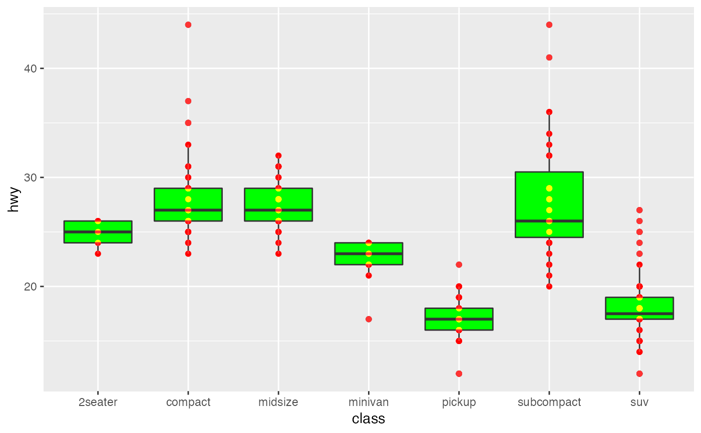

Many of the blend types available in with_blend() are variations over the
formula: a*src*dst + b*src + c*dst + d, where src stands for the channel
value in the source image and dst stands for the destination image (the
background). Multiply is e.g. defined as a:1, b:0, c:0, d:0. This filter
gives you free reign over setting the coefficient of the blend calculation.
with_blend_custom( x, bg_layer, a = 0, b = 0, c = 0, d = 0, flip_order = FALSE, alpha = NA, ... )
| x | A ggplot2 layer object, a ggplot, a grob, or a character string naming a filter |
|---|---|
| bg_layer | The background layer to use. Can either be a string identifying a registered filter, or a raster object. The map will be resized to match the dimensions of x. |
| a, b, c, d | The coefficients defining the blend operation |
| flip_order | Should the order of the background and the overlay be
flipped so that |
| alpha | For non-Duff-Porter blends the alpha channel may become modified.
This argument can be used to set the resulting alpha channel to that of the
source ( |
| ... | Arguments to be passed on to methods. See the documentation of supported object for a description of object specific arguments. |
A modified Layer object
library(ggplot2) ggplot(mpg, aes(class, hwy)) + as_reference(geom_boxplot(fill = 'green'), 'box') + with_blend_custom(geom_point(colour = 'red'), bg_layer = 'box', a = -0.5, b = 1, c = 1)